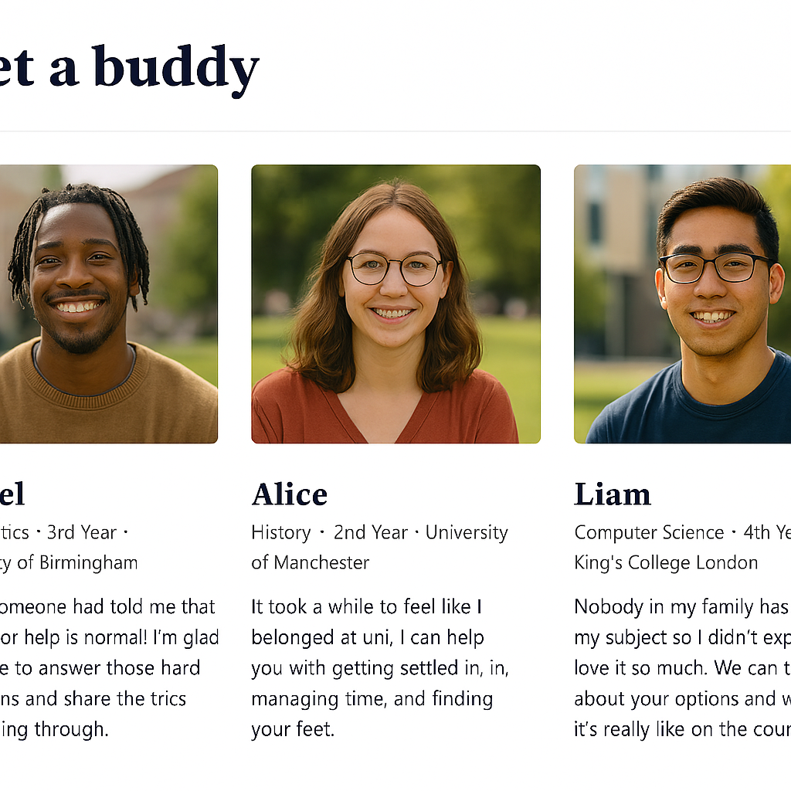
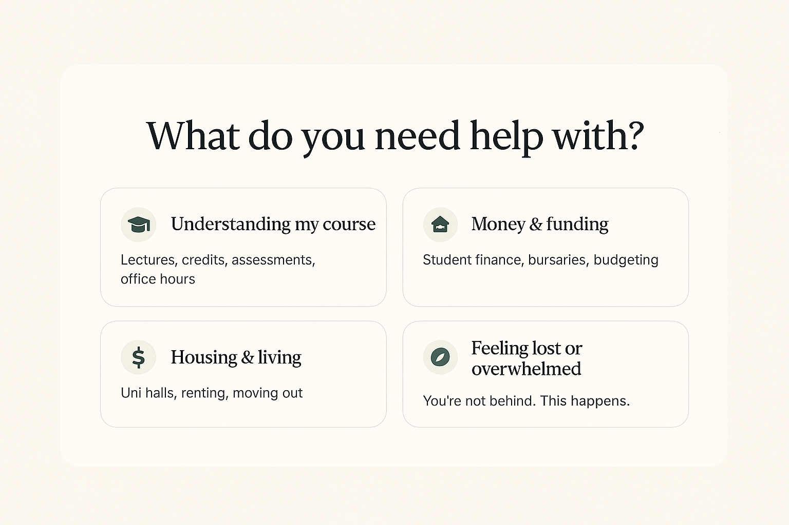

You belong at university — we're here to help you feel that, every step of the way.
University isn't just the next step — it's the place where your potential catches up with your ambition.
Get started →


What FirstGen is
For a lot of first‑gen students, university can feel like a place meant for someone else — someone with parents who've already done it, who know the system, who can explain how it all works. FirstGen exists to change that. You don't need a family history of university to belong there; you just need the chance to see yourself in that future.
Going to uni isn't about forgetting where you come from — it's about building on it. And if you choose to go, you're not just doing it for you.
By the numbers
A few things worth knowing before you decide.
Who it's for
FirstGen is for sixth‑formers who are thinking about university and don't have someone at home who's been there before. If you're navigating choices, applications, and expectations on your own — without a parent, sibling, or close family member who's already done it — this is for you.
It's for you if you've ever wondered whether university is "really for people like me," or felt unsure about the language, the systems, or the expectations. You don't have to know everything yet. You just have to be curious enough to find out.
Voices
Real words from first-generation students about what it's actually like — because hearing it from someone who's been there matters more than any brochure.
“Being the first to do so is often a very confusing and challenging experience, paired with the feeling that you do not belong there.”
“I had no one to ask. I had to figure everything out myself — from what UCAS even was, to how student finance worked.”
“Being first-gen made me proud, but it also made me feel like I had to prove I deserved to be there every single day.”
“Without university, I wouldn't be working in the field I'm in. It's opened the door to working in a field I didn't even know existed before.”
How it helps
- Helps you understand uni without the stress. We explain how university works — applications, student finance, choosing courses, and what it's actually like — in a way that makes sense, even if no one at home's been before.
- Real stories. You see people like you who've done it, showing that being first‑gen isn't a barrier, it's a beginning.
- A buddy who's done it already. You'll be matched with a mentor who was also the first in their family to go to uni. Someone you can message, ask questions, and be honest with — no awkwardness, no judgement.
- Helps you feel confident and not alone. Through support and a real community, you'll build confidence, figure things out step by step, and feel like you belong at university.


Meet a buddy

Meet your study buddy, Rufus
I'm a second‑year Mechanical Engineering student and the first in my family to go to university. When I was in sixth form, I wish I'd known that feeling unsure didn't mean I wasn't good enough — it just meant everything was new. I help with things like choosing the right course, what engineering is actually like day to day, managing the workload, and adjusting to uni life when you don't have family experience to rely on. You can ask me anything — no judgement and no such thing as a silly question.

Resources we trust
Well‑known, reliable UK websites that students (and schools) regularly use for accurate, up‑to‑date information about university, finance, and student life.
- UCAS — the official hub for applying to UK universities, with clear guidance on courses, applications, and student finance.
- Student Finance England (GOV.UK) — the official government site for tuition fee loans, maintenance loans, grants, repayment rules, and eligibility.
- Save the Student — a trusted student‑led site offering practical advice on budgeting, part‑time work, bank accounts, and saving money at uni.
- MoneySavingExpert — Students — independent guidance on student loans, overdrafts, budgeting tools, and financial myths.
- The Complete University Guide — independent UK university rankings, subject guides, and student advice.
Why this matters: when you're the first in your family to go to university, knowing which sources are trustworthy can save you time, stress, and money.
Where we're heading next
A peek at the next thing we're building — a plain-English decision helper that asks what you actually need, then points you to the right resource.

University isn't about leaving your background behind. It's about taking it with you — and going further.
If this feels unfamiliar, you're exactly who this is for.
Get started →Built with care
We want everyone to feel welcome here. This site has been built with accessibility in mind, including clear headings, readable text, sufficient colour contrast, descriptive image text, and forms that work with keyboards and screen readers. If something isn't working for you, we'd love to hear from you so we can improve.
Built by
A team of first-generation STEM students at the Sutton Trust hack at Microsoft London.
- Copywriters — Arany, Ronald
- Researchers — Eliana, Tanish
- Software Developers — Jessica, Ibukun
- Visual Designers — Noah, Kevin
- Accessibility Champion — Daniel